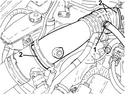
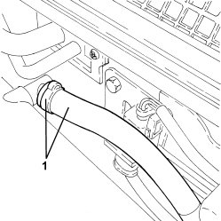
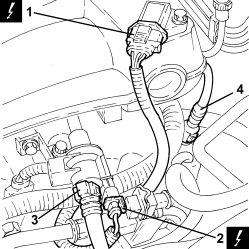
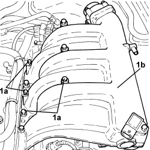
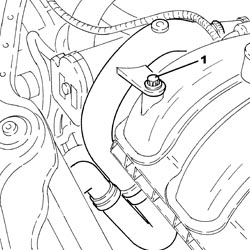
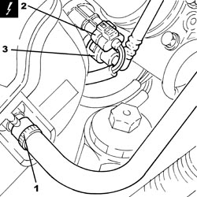
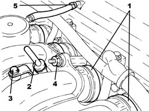
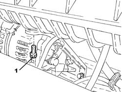
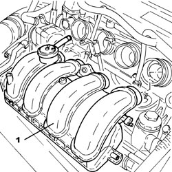

1072B50 AIR CHAMBER - R.R.
- Path
- Procedures > 10 ENGINE > 1072 INLET AND EXHAUST MANIFOLDS > 1072B INLET MANIFOLDS > 1072B50 AIR CHAMBER - R.R.
- Kind
- repair procedure (removal / refitting; the operation number is the code)
- Applies to
- engines: 2.2 JTS, 3.2 JTS; all production periods
- Interactive page
- https://sloeber94.github.io/elrnDB-aBrrSpdr/en/#/946001941
Applies to: engines: 3.2 JTS; all production periods
 Removing
Removing
 Refitting
Refitting1. Loosen the band and disconnect the engine oil vapour pipe, left head, from the intake chamber air inlet pipe.
2. Loosen the bands and remove the intake chamber air intake pipe.

Applies to: engines: 3.2 JTS; all production periods
1. Disconnect the electrical connection for the throttle casing.
Description | Connector | |
|---|---|---|
1 | Integrated throttle casing actuator |

Applies to: engines: 3.2 JTS; all production periods
1. Loosen the band and disconnect the brake servo vacuum intake pipe from the intake chamber.

Applies to: engines: 3.2 JTS; all production periods
1. Disconnect the electrical connection for the air pressure sensor.
Description | Connector | |
|---|---|---|
1 | Absolute pressure sensor |
2. Disconnect the electrical connection of the fuel vapour flow enablement solenoid valve.
Description | Connector | |
|---|---|---|
2 | Fuel vapour recovery solenoid valve |
3. Disconnect the rapid connector for the fuel vapour pipe, solenoid valve side.
4. Disconnect the rapid connector for the engine oil vapour pipe, right head, tappet cover side.

Applies to: engines: 3.2 JTS; all production periods
1. Undo the bolts (1a) and remove the intake chamber (1b).

Applies to: engines: 3.2 JTS; all production periods
Refitting
Removing- Fit the intake chamber in place and secure it using the bolts.
Component | Fastening | dia | Value (daNm) | Validity |
|---|---|---|---|---|
Air chamber | Bolt | - | 2.3 | 3.2 JTS |
- Connect the rapid connector for the engine oil vapour pipe, right head, tappet cover side.
- Connect the rapid connector for the fuel vapour pipe, solenoid valve side.
- Connect the electrical connection for the fuel vapour flow enablement solenoid valve.
- Connect the electrical connection for the air pressure sensor.
- Connect the brake servo vacuum intake pipe to the intake chamber and secure it using the band.
- Connect the electrical connection for the throttle casing.
- Place the intake chamber air inlet pipe in position and secure it using the bands.
- Connect the engine oil vapour pipe, left head, to the intake chamber air inlet pipe and secure it using the band.
Applies to: engines: 2.2 JTS; all production periods
Removing
Refitting- Make sure that the ignition key is in the OFF position, then disconnect the battery terminal (-).
Description | Connector | |
|---|---|---|
- | Battery |
Op. 1048A34 HOSE(S) FROM FLOW METER TO AIR SUPPLY CAPACITY CASE - R + R
Op. 1056F17 THROTTLE BODY WITH DVL - R.R.
1. Undo the bolt fixing the lower coolant outlet hose from the radiator, air chamber side.

Applies to: engines: 2.2 JTS; all production periods
1. Loosen the band and disconnect the brake servo vacuum intake pipe, air chamber side.
2. Disconnect the electrical connection from the fuel vapour solenoid valve.
Description | Connector | |
|---|---|---|
2 | Fuel vapour recovery solenoid valve |
3. Disconnect the rapid connector for the fuel vapour pipe from the fuel vapour solenoid valve.

Applies to: engines: 2.2 JTS; all production periods
1. Loosen the bands fixing the air chamber to the hoses.
2. Release the engine oil dipstick and remove it.
3. Undo the bolt securing the engine oil dipstick tube to the air chamber.
4. Undo the nut fixing the air chamber to the intake manifold.
5. Loosen the band and disconnect the engine oil vapour recovery pipe from the tappet cover.

Applies to: engines: 2.2 JTS; all production periods
1. Undo the bolt fixing the mounting bracket to the air chamber.

Applies to: engines: 2.2 JTS; all production periods
1. Remove the air chamber.

Applies to: engines: 2.2 JTS; all production periods
Refitting
Removing- Place the air chamber back in its housing.
- Tighten the bolt fixing the mounting bracket to the air chamber.
- Connect the engine oil vapour recovery pipe to the tappet cover and tighten the band.
- Tighten the nut fixing the air chamber to the intake manifold.
- Tighten the bolt securing the engine oil dipstick tube to the air chamber.
- Place the engine oil dipstick back in its housing.
- Tighten the bands fixing the air chamber to the hoses.
- Connect the rapid connector for the fuel vapour pipe to the fuel vapour solenoid valve.
- Connect the electrical connection to the fuel vapour solenoid valve.
- Connect the brake servo vacuum intake pipe, air chamber side and tighten the band.
- Tighten the bolt fixing the lower coolant outlet hose from the radiator, air chamber side.
Op. 1056F17 THROTTLE BODY WITH DVL - R.R.
Op. 1048A34 HOSE(S) FROM FLOW METER TO AIR SUPPLY CAPACITY CASE - R + R
- Connect the negative battery terminal.
Topics linked from this page (6)
- 1048A34 HOSE(S) FROM FLOW METER TO AIR SUPPLY CAPACITY CASE - R + R
- 1056F17 THROTTLE BODY WITH DVL - R.R.
- A001 BATTERY
- K048 ABSOLUTE PRESSURE SENSOR
- L010 FUEL VAPOUR RECOVERY SOLENOID VALVE
- N075 BUILT-IN THROTTLE BODY ACTUATOR
Topics that link to this page (28)
- 0520G15 COMPRESSION TEST - CHECK WITH EXAMINER WITH SPARK PLUGS/INJECTORS REMOVED
- 1016A34 RIGHT TAPPET COVER - R.R. AND REPLACE GASKET
- 1016A36 LEFT AND RIGHT TAPPET COVER - R.R.
- 1016C10 SINGLE CYLINDER HEAD - R.R. AND REPLACE GASKET
- 1028H10 CONNECTING ROD AND PISTON SET - R.R
- 1040B30 FUEL SUPPLY PIPE (ONE) - R.R.
- 1040B52 FUEL RETURN PIPE (ONE) - R.R.
- 1056F61 LEFT CYLINDER HEAD FUEL MANIFOLD PIPE - R.R.
- 1056F62 RIGHT CYLINDER HEAD FUEL MANIFOLD PIPE - R.R.
- 1056F66 LEFT CYLINDER HEAD INJECTOR SET - R.R.
- 1056F67 RIGHT CYLINDER HEAD INJECTOR SET - R.R.
- 1056F68 INJECTOR SET - R.R. INCLUDING GASKET REPLACEMENT
- 1056F94 SYSTEM CABLE LOOM ON ENGINE - R.R.
- 1072B21 AIR INTAKE FUEL MANIFOLD INTERGRATED DUCT R R AND REPLACE GASKET
- 1072B54 HOSES CONNECTING AIR INTAKE CHAMBER TO INTAKE MANIFOLD(S) - R.R.
- 1072C13 EXHAUST MANIFOLD GASKET - REPLACE
- 1072C16 EXHAUST MANIFOLD WITH CATALYTIC CONVERTER - R.R.
- 1076A72 HEAT SHIELD FOR RIGHT CATALYTIC PRECONVERTER - R.R.
- 1080E28 ENABLEMENT SOLENOID FOR FLOW OF FUEL VAPOUR TO INLET - R+R
- 1080E50 INTERMEDIATE FUEL VAPOUR PIPE R R
- 3340B40 RIGID PIPE from hydraulic control unit to intermediate connector for right front brake - R.R.
- 3340B41 RIGID PIPE FROM INTERMEDIATE CONNECTOR TO RIGHT FRONT BRAKE - R.R.
- 4130B20 POWER STEERING PUMP - R.R.
- 5010A12 HEATER WATER SUPPLY PIPE - R.R.
- 5010A16 HEATER WATER RETURN PIPE - R.R.
- 5510C18 RIGHT CYLINDER HEAD IGNITION COIL - R+R
- 5510D10 SPARK PLUGS - R+R
- 5530A10 ALTERNATOR - R+R